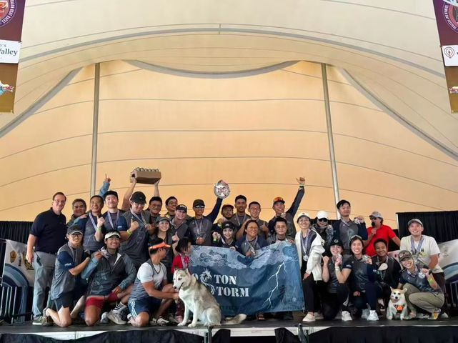
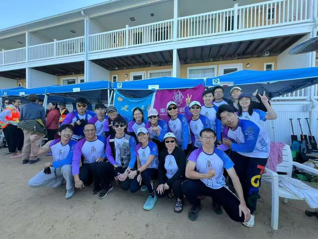
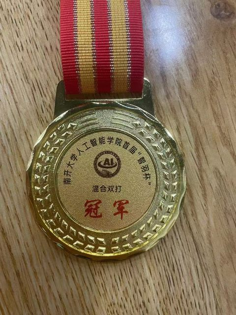
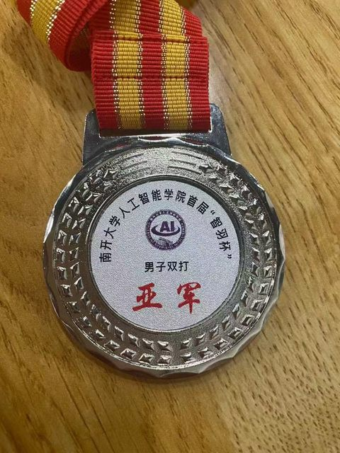
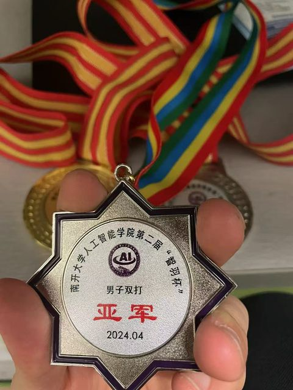

Struggling with reinforcement learning? Worried about uncertainty? Having trouble bridging the sim-to-real gap? That’s exactly what I work on. I am a third-year Ph.D. candidate in Interdisciplinary Engineering at Northeastern University, advised by Prof. Seyede Fatemeh Ghoreishi, developing machine-learning methods that keep autonomous-driving policies stable and robust — from driving-style modeling to risk-sensitive decision-making.
I also welcome research collaboration, particularly in the following areas:
Driving-style modeling
Risk-sensitive & robust RL
Domain randomization & sim-to-real
Unsupervised skill discovery
Diffusion models for RL
Physical AI
Updates
News
Scroll to see all ↓
PaperPaper accepted to IEEE Transactions on Vehicular Technology.
AwardReceived the IEEE RAS Travel Support Award for IEEE/RSJ IROS 2026, Pittsburgh, PA.
PaperPaper accepted to IEEE/RSJ IROS 2026.
TeamAs captain, led the Nantianmen Dragon Boat Team to a bronze medal in the Division C Major category at the Boston Dragon Boat Festival.
PaperFirst journal paper accepted to the International Journal of Intelligent Transportation Systems Research.
PaperPaper accepted to IEEE ITSC 2026.
PosterPresented the poster “RGDR: Reward-Guided Domain Randomization for Autonomous Driving” at CEE Industry Leadership Night, Northeastern University.
AwardReceived a travel grant for ACC 2026, New Orleans, LA.
PaperPaper accepted to IEEE ICRA 2026, Vienna, Austria.
PaperPaper accepted to ACC 2026 for oral presentation.
TalkPresented “RGDR: Reward-Guided Domain Randomization for Autonomous Driving” at the CEE Research Expo, Northeastern University.
TalkPresented “Robust Reinforcement Learning for Autonomous Driving in Uncertain Environments” at IEEE CASE 2025, Los Angeles, CA.
PaperPaper accepted to IEEE ITSC 2025.
AwardReceived a travel grant for IEEE CASE 2025.
PaperPaper accepted to IEEE CASE 2025.
PosterPresented the poster “Probabilistic Adaptation for Robust Decision-Making of Autonomous Vehicles in Non-Stationary Environments” at CEE Industry Night, Northeastern University.
Publications
Research
Publications since 2025 · complete list on Google Scholar
IEEE RAS Travel Support Award, IEEE/RSJ IROS, Pittsburgh, PA
2026
Travel Award, American Control Conference, New Orleans, LA
2025
Travel Award, IEEE CASE, Los Angeles, CA
2024–2025
Civil and Environmental Engineering Fellowship, Northeastern University
2022–2023
China National ScholarshipTop 2%, Nankai University
2022–2023
First-Class Graduate Student Scholarship, Nankai University
2021
Graduate Recommended Examination Exemption Scholarship, Nankai University
2019–2020
China National ScholarshipTop 1%, China University of Geosciences (Wuhan)
2018, 2019, 2020
Outstanding Student Model (school level), China University of Geosciences (Wuhan)
Beyond research
Personal Interests
I serve as captain of the Nankaitianda Nantianmen Dragon Boat Team and also paddle with the Boston Storm Dragon Boat Club. The sport demands strength, endurance, and precise team coordination.


I have played competitive badminton, in both singles and doubles, for three years. Selected medals are shown below.



I hike regularly, particularly in autumn, on mountain, lakeside, and forest trails throughout New England.